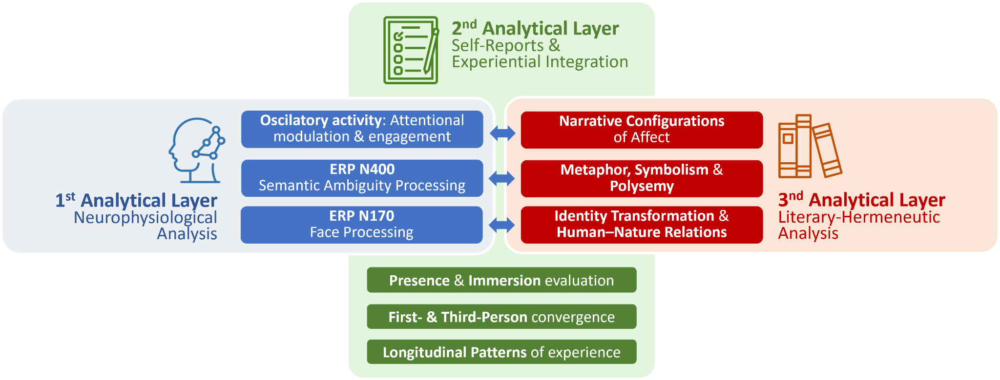
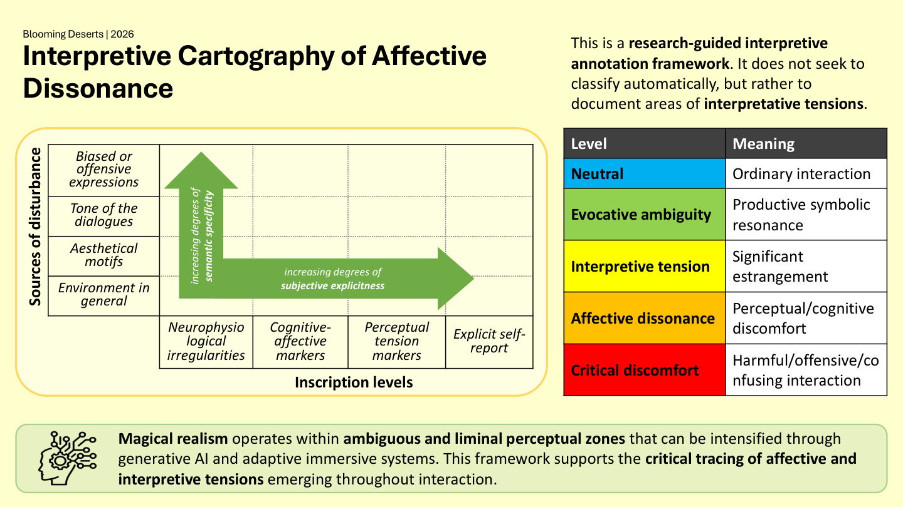
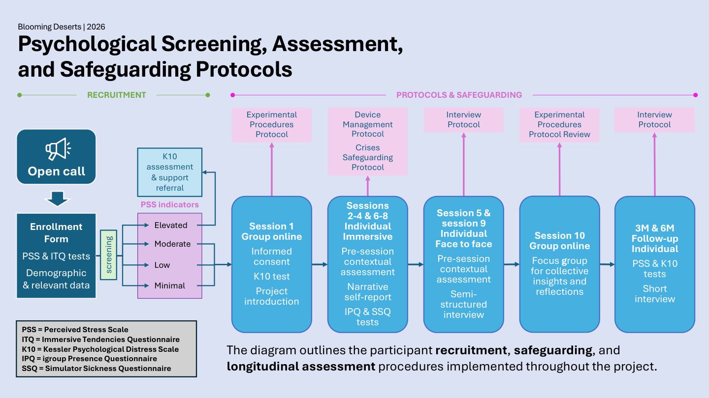

Magical realism
A literary mode where the extraordinary inhabits everyday reality. Here, it becomes a method for exploring ambiguity, metaphor, memory, and culturally situated forms of perception.
A Neurohumanities Research Project · Northern Mexico
Magical Realism and the Neurohumanities of the Subjective Experience in Northern Mexico
What can immersive literary experiences reveal about how we feel, interpret, and make meaning of ourselves?
Explore the projectThe project
Blooming Deserts explores magical realism as a culturally situated way of approaching subjective experience. Bringing literary inquiry into dialogue with neuroscience, immersive technologies, and generative AI, the project asks how people make sense of affect, distress, and selfhood through experiences that are at once embodied, narrative, and culturally meaningful.
Set within a Neurohumanities Laboratory, the research uses technologies not simply to monitor or optimise behaviour, but as perceptual mediators that can help make otherwise difficult-to-articulate dimensions of experience available for reflection. The project is research-oriented rather than a clinical intervention.
A central proposition
The desert of Northern Mexico is approached as both a culturally significant landscape and a metaphor for the contemporary psyche: a place of immensity, uncertainty, introspection, and latent vitality. In this immersive environment, dawn and dusk, storm and calm, withering and blooming become elements through which affect and interpretation can take shape.
01 / Research vision
The project brings together distinct ways of understanding experience without reducing one to another.
A literary mode where the extraordinary inhabits everyday reality. Here, it becomes a method for exploring ambiguity, metaphor, memory, and culturally situated forms of perception.
Adaptive audiovisual and spatial environments invite participants to move through a symbolic desert, articulate interpretations, and encounter changing narrative elements.
Neurophysiological and biometric signals are interpreted alongside self-reports, interviews, and participant-generated narratives to develop a richer account of subjective experience.
02 / Research questions
The inquiry focuses on how immersive, adaptive literary environments may reshape attention, affect, interpretation, and self-expression.
How do immersive and adaptive literary environments grounded in magical realism reshape the experience, interpretation, and articulation of affect and distress?
What forms of knowledge about subjective experience emerge when first-person accounts are brought into dialogue with neurophysiological measures through culturally situated literary frameworks?
How do the narrative and affective logics of magical realism reconfigure embodiment, agency, and subjectivation within immersive environments?
Under what ethical, cultural, and epistemic conditions can adaptive neurotechnological systems support non-reductive understandings of self-relation and wellbeing?
03 / Immersive experience
The proposed design builds on immersive methodologies validated through pilot neurohumanities studies. Structured as a cumulative literary experience, four interconnected scenes progressively transform embodied perception into interpretation and narrative articulation, while participant actions continuously reshape the immersive environment. The experience concludes with a creative writing exercise, in which participants produce a short post-session narrative grounded in magical realism, supporting reflective integration. The same narrative structure will be adapted to a VR environment, preserving its core literary and methodological principles.
From preparation to narrative integration
The xR condition preserves forms of environmental continuity and embodied situatedness, while the VR condition enables deeper perceptual enclosure and sensory isolation, supporting comparative analysis of immersive subjectivation processes.
Experimental setup
Shared setup legend
04 / Research methodology
The project integrates three analytical layers. Their value lies not in any single measure, but in the interpretation made possible when different perspectives are brought together.

A three-layer analytical architecture integrating neurophysiological markers, structured self-reports, and literary-hermeneutic interpretation. The innovation is not the use of EEG, questionnaires, or literary interpretation in isolation. It is the analytical architecture that allows these three perspectives to converge into a neurohumanities interpretation of subjective experience.
05 / Adaptive AI
The project proposes a humanities-led retrieval-augmented generation (RAG) approach for literary interaction. Rather than training a domain-specific generative model, it will use a curated corpus and interpretive guidelines to support situated dialogue within the immersive environment.
Particular attention will be paid to ambiguity, bias, discomfort, and affective dissonance. These are not treated simply as errors to erase, but as tensions to document and critically interpret, with safeguards designed to prevent harmful or confusing interactions.

06 / Ethics & safeguarding
The project is not conceived as a clinical intervention. Its research design nevertheless includes screening, informed consent, psychological oversight, and referral pathways where needed.
Participation is voluntary. Participants are informed about the immersive experience, physiological measures, AI-mediated dialogue, data handling, potential risks, available support, and their right to withdraw without consequence. Sessions may be paused or stopped if discomfort or distress arises.
Enrollment and screening measures help inform suitability and identify when additional assessment or support may be appropriate.
A qualified psychology professional oversees safeguarding procedures, staff preparation, distress management, and referral pathways.
The proposed protocol includes reflective interviews, a group closing session, and follow-up assessments three and six months after the final session.

The information on this page describes the research protocol, not a clinical service or a substitute for professional care.
07 / Expected contributions
A culturally situated framework for studying introspection, affect, and subjective meaning-making.
An openly documented research protocol connecting neurophysiological, behavioural, and first-person accounts.
A modular literary environment integrating visual, auditory, spatial, and physiological components.
A traceable RAG approach for adaptive literary interaction, guided by aesthetic and ethical principles.
Questioning dominant models of mind and wellbeing through literary narratives, embodied experience, and plural forms of knowledge.
Research-informed guidance for future culturally situated immersive wellbeing studies and applications.
08 / Research team
The project brings together expertise across humanities, engineering, psychology, data science, and design.
Principal Investigator · Digital Humanities & Post-structural Philosophy
Distinguished Professor · Critical and Decolonial Digital Humanities
Associate Researcher · Magical Realism & Literary Analysis
DataHub · Data Management & Machine Learning
Associate Researcher · Biomedical Engineering
Professional oversight, training, and participant support protocols
Blooming Deserts
Magical realism · Neurohumanities · Northern Mexico